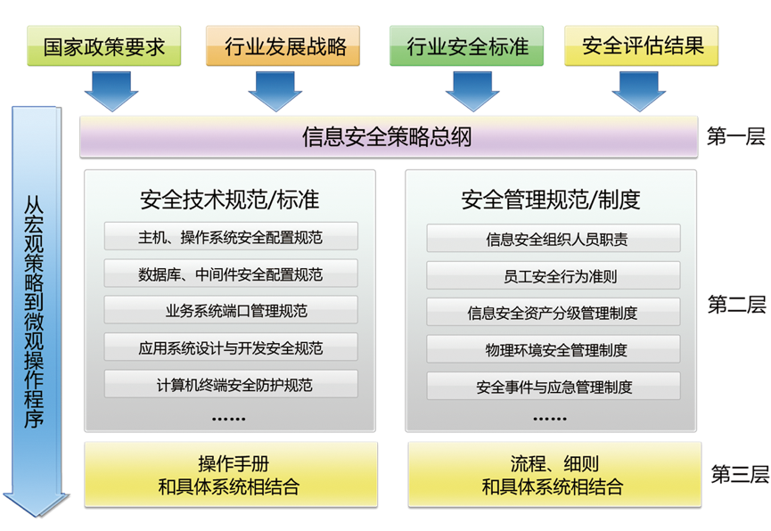
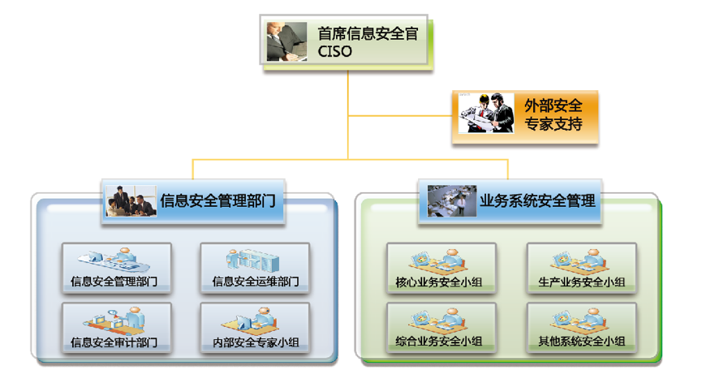
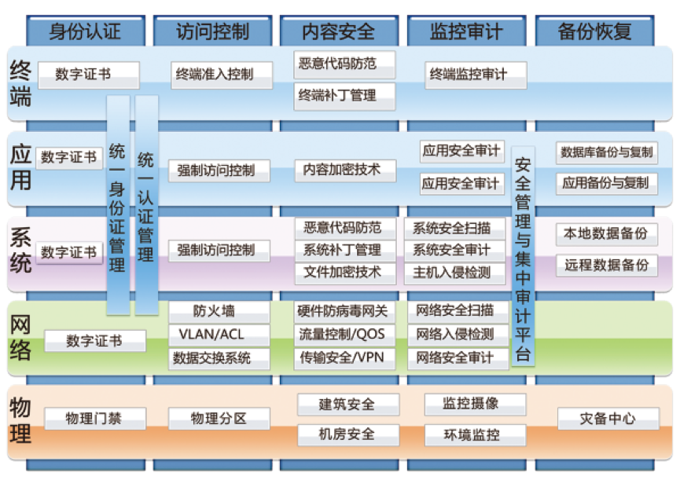
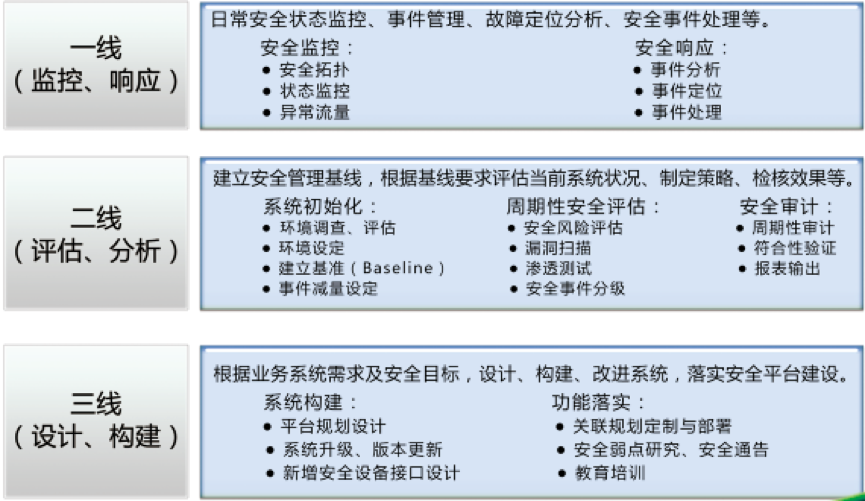

|
传统企业网信息安全解决方案 信息安全从来就不单纯是一项技术、一个产品的安全，而是信息、网络与人高度综合的安全，人和技术的辩证统一是信息安全的根本解决之道。捷成信息安全解决方案是客户的安全需求与信息安全产品、服务之间的桥梁，是客户的安全保障体系与安全核心技术间的桥梁。 信息安全管理体系 信息安全管理体系由信息安全策略体系及信息安全组织结构共同组成。在进行信息安全策略体系建设时，首先需要明确信息安全策略总纲，之后根据总纲制定信息系统安全技术规范及安全管理规范。  信息安全组织是确保信息安全决策落实、支持信息安全工作开展的基础。建设该组织的目的主要是通过构建和完善组织内信息安全组织结构，明确不同安全组织、不同安全角色的定位、职责以及相互关系，强化专业化管理并实现对安全风险的有效控制。  信息安全技术体系 信息安全技术体系包括以下五个方面：身份认证技术，访问控制技术，监控审计，内容安全技术，备份恢复技术。 ● 身份认证技术是信息安全体系至为关键的环节，也是整体安全策略和信息安全技术体系的前提保障。 ● 访问控制是指限制主体对客体的访问及限制主体和其它主体之间的通信。其目标是阻止未授权使用资源和未授权公开或修改数据。 ● 针对内容安全的威胁是来自多方面的，工作站在进行上载时面临的恶意代码、业务系统接口服务器的脆弱性等。 ● 监控审计是针对业务系统资产以及对网络资源和数据的访问、使用等行为活动进行监管、控制、审核、分析的过程。 ● 数据备份恢复的任务与意义就在于，当灾难发生后，通过备份的数据完整、快速、简捷、可靠地恢复原有系统，确保灾后业务立 即恢复，保障安全播出的顺利进行。  信息安全运行体系 信息安全运行体系由信息安全管理与审计平台和信息安全运维中心共同组成，其中前者是运行体系中的技术部分，主要用于各业务系统日常状态监控、事件管理、故障定位分析等工作；后者则是运行体系中的管理部分，安全管理中心是整个信息安全运维的执行机构。  |
 官方微博
官方微博 官方微信
官方微信
 传统企业网信息安全解决方案
传统企业网信息安全解决方案